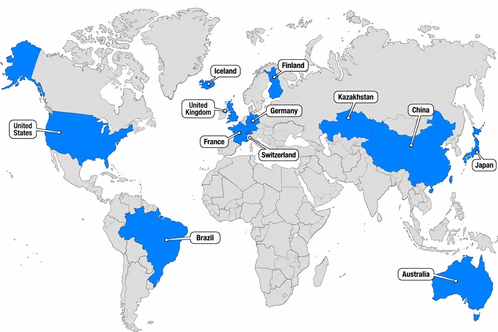

Place your map image file named world_map.png in the same folder as index.html.
United Kingdom • Unit 1
Higher Education & The Cambridge System
Question 1 of 5
Choose your spoken reply (click a button — no typing needed):